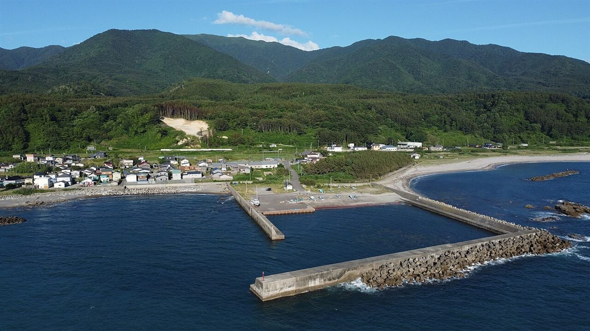
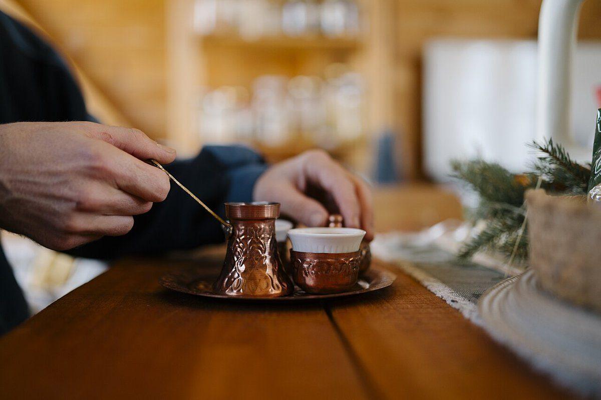

About
店のこと
店名の「No.52」と、むつ市という土地について、制作側が考えたことを並べます。
このページの文章は、制作側が想像して書いたものです。お店の考えや事実ではありません。実際の内容はお店への取材後に差し替えます。
No.52
数字の由来は、分かりません。
店名の「No.52」がどこから来たのか、制作側は知りません。以下は、あくまで制作側の連想です。
- 一年の週の数週に一度の習慣になるお店、という連想。
- 番号札順番を待つ札のように、気軽に並んで立ち寄る場所、という連想。
- 通り番号町のどこかの番号かもしれない、という連想。

Mutsu
むつ市と、下北半島。

むつ市は、本州の北のはしにある下北半島に位置する市です。海と山にはさまれた土地で、恐山もむつ市にあります。
写真は青森県内の別の町の漁港で、むつ市の写真ではありません。海ぞいの土地の雰囲気をお伝えするためのイメージです。
Stand
立ち寄るための「スタンド」。(想像)
スタンドという言葉から、制作側は「気軽に立ち寄れる小さなお店」を思い浮かべました。長居のためというより、仕事の合間や散歩の途中に、一杯を受け取って次へ向かう場所。想像です。
お店のこだわりやメニューは、取材のうえで書き直します。
